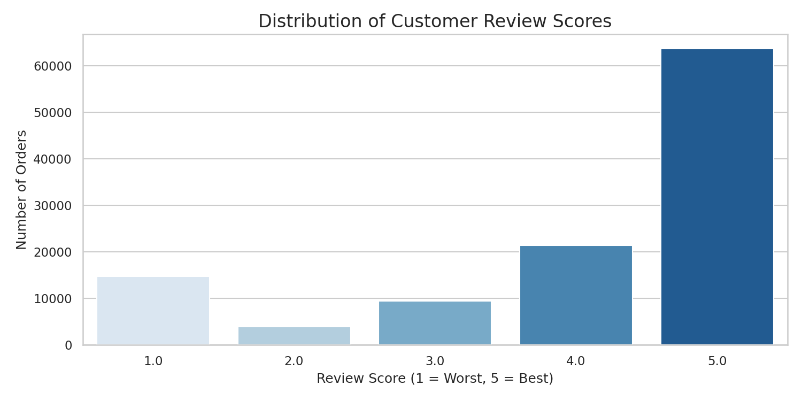
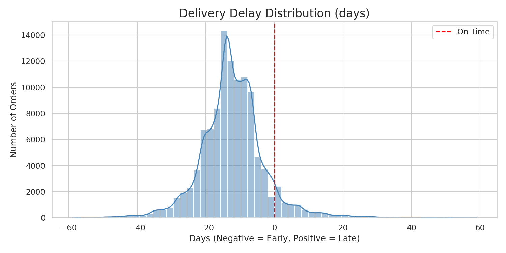
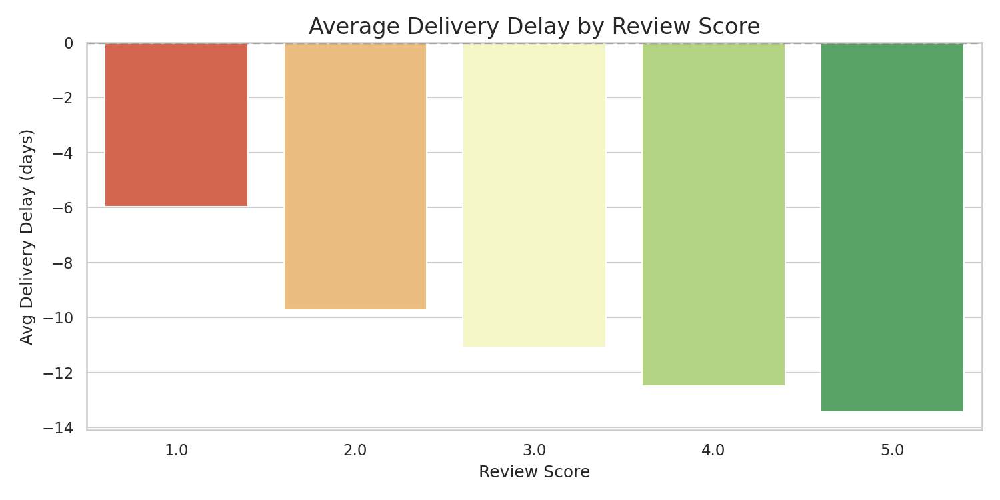
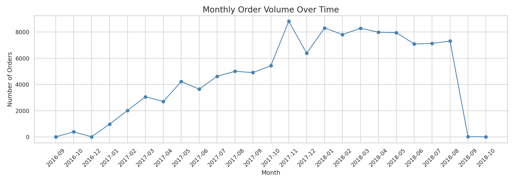
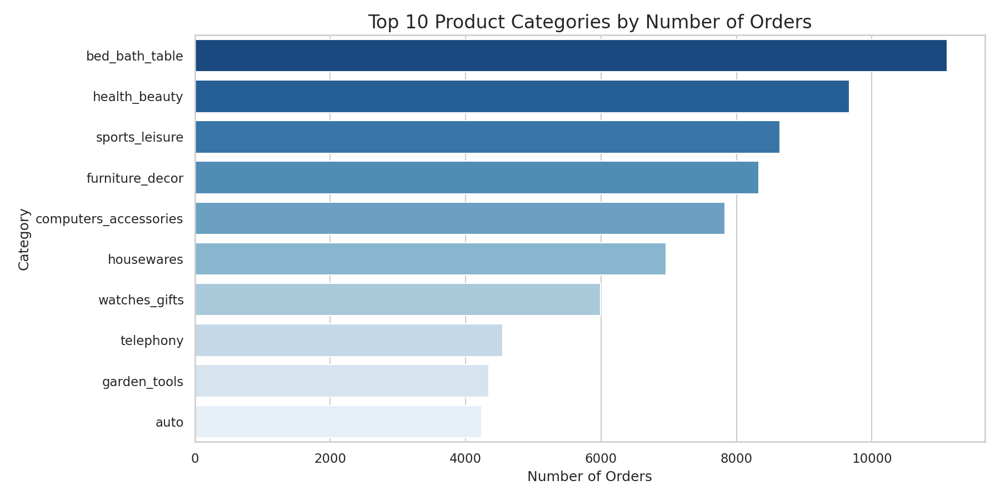
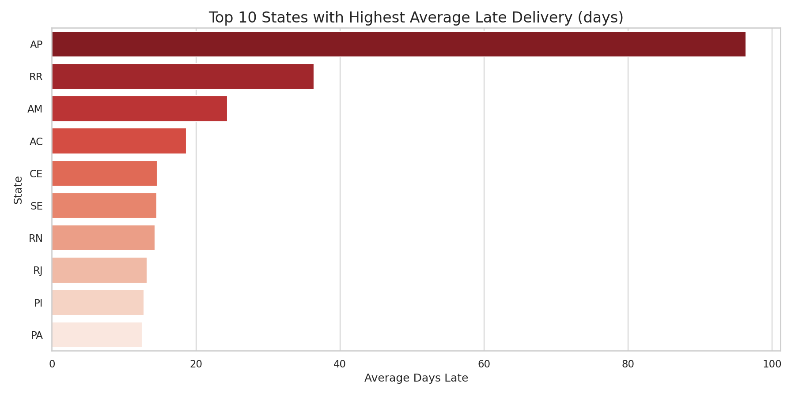
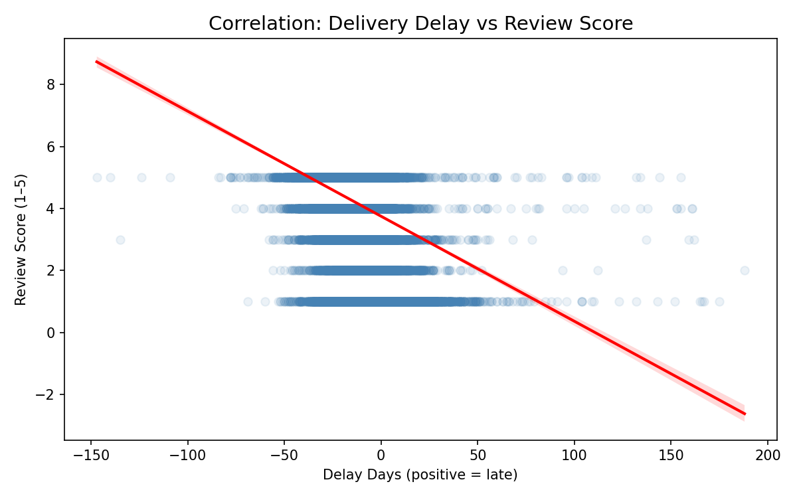
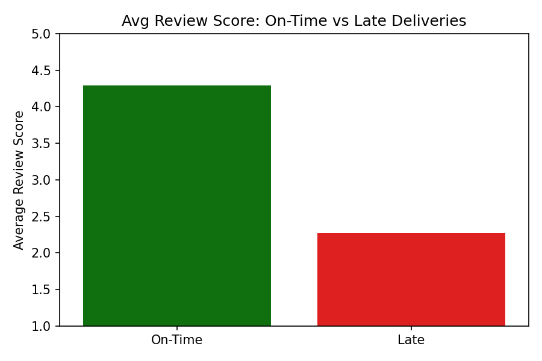
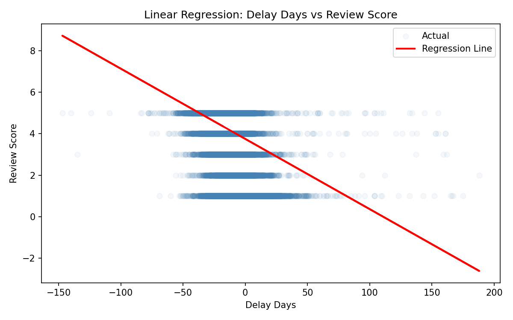

Olist Marketplace Dataset — Capstone Project Report
This report presents a comprehensive analysis of the Olist Brazilian E-Commerce dataset to investigate the relationship between delivery performance and customer satisfaction. Using 96,470 delivered orders from 2016–2018, we applied a rigorous data analytics pipeline including extraction, cleaning, exploratory analysis, and statistical testing.
The Pearson correlation coefficient between delivery delay and review score is r = −0.267, confirming a moderate negative relationship. A linear regression model shows that each additional day of delay reduces the predicted review score by 0.034 points, although delivery delay alone explains only 7.1% of the variance in review scores, suggesting other factors (product quality, communication) also contribute to satisfaction.
E-commerce has grown rapidly in Brazil, with the market projected to exceed $40 billion by 2025. Olist, a major Brazilian marketplace connecting small merchants to large retail channels, processes orders across all 26 states and the Federal District. Customer satisfaction is critical for marketplace retention and growth.
"How does delivery performance (on-time vs. late deliveries) impact customer satisfaction (review scores) in the Brazilian e-commerce ecosystem?"
The dataset is publicly available on Kaggle and contains anonymized commercial data from Olist spanning September 2016 to October 2018.
| Dataset | Rows | Columns | Description |
|---|---|---|---|
| olist_orders_dataset | 99,441 | 8 | Core orders table with timestamps and status |
| olist_order_items_dataset | 112,650 | 7 | Order line items with price and freight |
| olist_customers_dataset | 99,441 | 5 | Customer demographics (city, state) |
| olist_order_reviews_dataset | 99,224 | 7 | Customer review scores and comments |
| olist_products_dataset | 32,951 | 9 | Product catalog information |
| olist_sellers_dataset | 3,095 | 4 | Seller location data |
For detailed column-level documentation, data types, and transformation notes, refer to the companion Data Dictionary (docs/data_dictionary.md).
| Category | Tools |
|---|---|
| Programming | Python 3.12 |
| Data Manipulation | Pandas, NumPy |
| Statistical Analysis | SciPy (Pearson, T-test), Scikit-learn (Linear Regression) |
| Visualization | Matplotlib, Seaborn |
| Dashboarding | Tableau |
| Notebooks | Jupyter Notebook / Google Colab |
The pipeline is implemented across 5 sequential Jupyter notebooks and automated via scripts/etl_pipeline.py. It consists of 15 transformation steps organized into three phases:
Six raw CSV files are loaded from the data/raw/ directory. Schema inspection and null-value auditing are performed to understand data quality before transformations.
| # | Transformation | Impact |
|---|---|---|
| T01 | Parse 5 datetime columns from strings | Enable time arithmetic |
| T02 | Compute delivery_delay_days | Core KPI (positive = late) |
| T03 | Compute actual_delivery_days | Logistics performance metric |
| T04 | Extract month, year, day-of-week | Time-series grouping |
| T05 | Drop 8 rows with null delivery date | Data integrity |
| T06 | Fill null review comments with "" | Non-analytical text |
| T07 | Fill 610 null categories with "unknown" | Preserve row integrity |
| T08 | Fill null dimensions with median | Non-critical imputation |
| T09 | Standardize order_status to lowercase | Consistent values |
| T10 | Standardize text fields | Clean joins |
| T11 | Create delivery_status column | Binary classification |
| T12 | Aggregate order_items to order level | One row per order |
| T13 | Deduplicate reviews (keep latest) | Prevent join inflation |
| T14 | Merge all tables into master DataFrame | Single analysis-ready dataset |
| T15 | Filter to delivered orders only | Focus on completed orders |
Two output datasets are produced:
Seven visualizations were produced to explore data distributions, relationships, and trends. All charts are saved in reports/plots/.

Figure 1: Distribution of customer review scores (1–5)
The review score distribution is heavily right-skewed, with 5-star reviews being the most common. However, 1-star reviews are the second most frequent, indicating a polarized customer base — customers tend to rate at the extremes.

Figure 2: Distribution of delivery delay in days (negative = early, positive = late)
The majority of orders arrive before the estimated delivery date, with a mean delay of approximately −12 days. Only about 6.8% of orders arrive late. This suggests that sellers set conservative estimated delivery dates as a safety buffer.

Figure 3: Average delivery delay by review score
A clear inverse relationship emerges: 5-star reviews have an average delay of −14 days (early delivery), while 1-star reviews have an average delay of +3 days (late delivery). This visually confirms the hypothesis that delivery performance impacts satisfaction.

Figure 4: Monthly order volume from 2016 to 2018
Order volume grew significantly throughout 2017 and into 2018, indicating healthy marketplace growth. Notable spikes appear around November (Black Friday) and holiday seasons.

Figure 5: Top product categories

Figure 6: Late delivery rate by state

Figure 7: Scatter plot with Pearson correlation
| Metric | Value | Interpretation |
|---|---|---|
| Pearson r | −0.2668 | Moderate negative correlation |
| P-value | ≈ 0.00 | Highly statistically significant |
The Pearson correlation coefficient of −0.267 indicates a moderate negative relationship between delivery delay and review score. As delivery delays increase, customer satisfaction decreases. The p-value of effectively zero confirms this relationship is not due to random chance.

Figure 8: Mean review scores for On-Time vs. Late deliveries
| Group | Count | Mean Score | Std Dev |
|---|---|---|---|
| On-Time | 89,949 | 4.29 | — |
| Late | 6,410 | 2.27 | — |
| Test Statistic | Value |
|---|---|
| T-statistic | −132.0470 |
| P-value | ≈ 0.00 |
| Result | REJECT H₀ — significant difference exists |
The t-test confirms that the 2.02-point difference in mean review scores between on-time (4.29) and late (2.27) deliveries is statistically significant. Late delivery nearly halves the customer's review score.

Figure 9: Linear regression — delivery delay predicting review score
| Metric | Value | Interpretation |
|---|---|---|
| Coefficient (β₁) | −0.0339 | Each +1 day delay → −0.034 score |
| Intercept (β₀) | 3.7516 | Predicted score at zero delay |
| R² Score | 0.0712 | 7.12% of variance explained |
The linear regression model review_score = 3.75 − 0.034 × delay_days shows that delivery delay is a statistically significant predictor, but the low R² (7.12%) indicates that delivery delay alone does not fully explain customer satisfaction. Other factors — such as product quality, seller responsiveness, and product-expectation mismatch — contribute to the remaining 93% of variance.
This analysis demonstrates a clear, statistically significant relationship between delivery performance and customer satisfaction in the Olist Brazilian e-commerce marketplace. While the majority of orders arrive on time, the small percentage of late deliveries has a disproportionately negative impact on customer reviews. The findings provide actionable insights for logistics optimization, customer communication improvements, and predictive monitoring systems that could meaningfully improve the Olist customer experience.
The complete analysis pipeline — from raw data extraction through statistical testing — is fully reproducible using the provided notebooks and scripts, ensuring transparency and auditability of all results.
See README.md for the complete project directory layout.
See docs/data_dictionary.md for column-level documentation of all datasets.
See scripts/etl_pipeline.py for the reproducible Python ETL script.
See tableau/dashboard_links.md for links to the interactive Tableau dashboards.